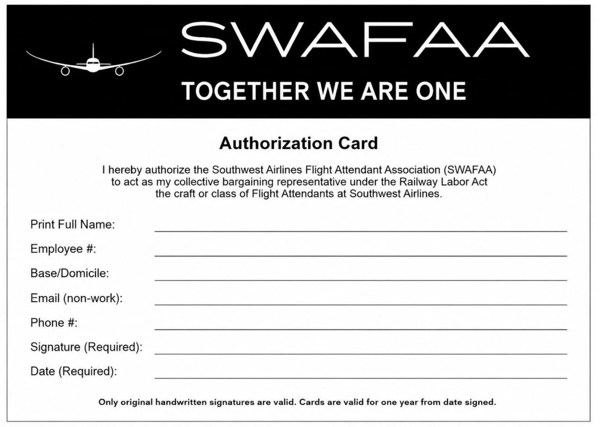
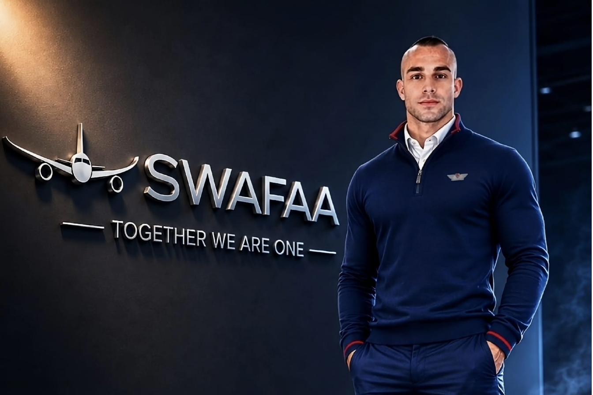

BUILT DIFFERENT.
WE'RE NOT LIKE
THE REST. WE'RE
SWAFAA.
A movement built by working Flight Attendants who believe we deserve another option — one that's transparent, accountable, and 100% focused on Southwest Airlines Flight Attendants. Every dollar. Every decision. Every time.
Choice, under the law
SWAFAA is a grassroots movement created by and for working Flight Attendants. We are not yet a certified union, but we are building something better — member-led, transparent, and focused on what you actually need.
This is about choice under the Railway Labor Act. The RLA gives every Flight Attendant the right to organize and choose their own representative. The National Mediation Board runs fair elections. Authorization cards are just what gets us to a vote — they are not the vote itself. And changing representatives never cancels your existing contract.
This isn't about hating any other union or the people in it. It's about believing Flight Attendants deserve another option — and that the choice should be yours.
From card to contract
This is a real, legal process run by a federal agency — not a company process, and not a popularity contest. Here's exactly what happens, in order.
You sign the card
You confidentially authorize SWAFAA to petition for a vote. It isn't a vote itself, isn't binding, and you can withdraw it any time before we file.
We build a majority
Cards from more than 50% of Southwest Flight Attendants are needed before anything gets filed. Every base, every domicile.
NMB verifies interest
We file with the National Mediation Board. They independently verify the showing of interest — the company never sees who signed.
Secret ballot election
The NMB runs a federally supervised secret ballot. Every Flight Attendant votes — for SWAFAA, for the current union, or for neither.
The card, explained
Signing costs you nothing and locks you into nothing. It just says: I want the opportunity to vote.
- Not a vote — just a request for the chance to hold one
- Confidential. The company never sees individual signatures
- Reversible any time before we file with the NMB
- Valid for one year from the date you sign
- Only original handwritten signatures are valid
The Authorization Card is a confidential document that Southwest Airlines Flight Attendants sign to request the opportunity to vote for union representation.
This is your voice. This is your choice. This is how we get to a vote.

Governance
Constitution & Bylaws
This is the document that makes SWAFAA different — the founding rulebook that puts members, not leadership, in permanent control. It spells out how officers are elected, how they can be voted out, how every dollar is tracked, and why SWAFAA can never be quietly merged, sold, or absorbed into another union without members saying so first.
A built-in Guardian role keeps watch over finances and ethics long after the founding term ends — and that safeguard can never be stripped away, even by future leadership. Everything else stays exactly where it belongs: in members' hands.
- Member-driven governance — elections, referenda, and override power stay with you
- Full financial transparency — quarterly reports and an independent annual audit
- Permanent independence — no merger or affiliation without a member vote
- Term limits, recall, and a locked-in anti-corruption Guardian role
How we stay different
The honest question isn't "why should I trust you today." It's "what stops this from becoming exactly what it replaced." Here's the structure built to answer that.
Term limits
Leadership doesn't get to stay indefinitely. Fresh perspectives and a real connection to the day-to-day job are written into the structure, not left to goodwill.
Recall & elections
Members can vote leadership out. The founding team builds the organization for a defined startup period — then leadership transitions to member elections.
Financial transparency
Regular, plain-language reports on where every dollar comes from and where it goes. If it can't be explained clearly, it shouldn't be asked for.
The Guardian role
Once the organization is stable, founding leadership steps back from day-to-day control into an oversight role — watching for the decay, rot, or dishonesty that started this movement in the first place.
Built by working Flight Attendants
SWAFAA was founded and is led by Flight Attendants who understand the job from the inside. We're not distant consultants or outside organizers. We fly the line, know the challenges, and are committed to building something that works for everyone.
Every decision we make is rooted in the reality of what it means to be a Southwest Airlines Flight Attendant. That's what makes us different.

The 100 toughest questions
BUILT DIFFERENT. WE'RE NOT LIKE THE REST. WE'RE SWAFAA. Search below or filter by topic.
Building a Stronger Foundation
SWAFAA — the Southwest Airlines Flight Attendant Association — is an independent, member-led initiative being built by and for Southwest Airlines Flight Attendants. We're working to create an organization that truly listens to its members, values transparency and accountability, and never loses sight of the people it was created to serve.
We're building this from the ground up, one step at a time, with the hope of creating something Flight Attendants can believe in, participate in, and be proud to call their own.
Your support helps make that possible — from legal and compliance work and organizational filings to technology, communications, educational materials, outreach, and the resources needed to keep moving SWAFAA forward.
Whether you give $5, $25, $100, or simply share SWAFAA with another Flight Attendant, you're helping build something bigger than any one person.
We're genuinely grateful to everyone who chooses to stand with us, support this vision, and help us take the next step.
Together. We. Are. One.
Secure donation through Zeffy